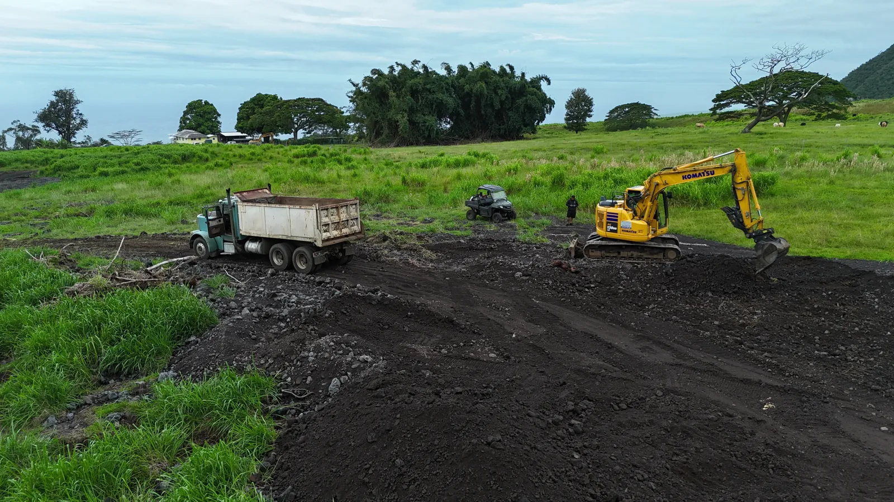

Clearing access
Helping clear access around Pāhala and Wood Valley was part of the early effort.

PĀHALA · WOOD VALLEY · KAʻŪ, HAWAIʻI
For the place we call home.
For the work that keeps going.
MEET RYAN SANBORN
The story behind Help Ryan Help Kaʻū, in Ryan’s own words. Watch the interview to get to know the person behind the work.
Watch right here. Press play to load the video; YouTube’s privacy policy applies.
Our land. Our neighbors.
Our shared effort.
Help Ryan Help Kaʻū connects direct community support with a clear view of the work: the equipment, the ground being worked, and the people keeping it moving.
See what support helps coverWELCOME TO THE PROJECT
An introduction to Ryan, the work, and the community effort behind the Fuel Fund.
A few words from
right here in Kaʻū.

01 / HOW IT STARTED
The project’s account begins after Hurricane Lala, when Ryan Sanborn began helping clear access around Pāhala and Wood Valley. What started with access work has continued into an effort that takes time, equipment, and fuel.
Hear Ryan’s story in the interview above, and follow the work through photographs and updates.
02 / THE WORK TODAY
Follow Ryan’s berm building, earthmoving, and work around water pathways through photographs and field updates.

Helping clear access around Pāhala and Wood Valley was part of the early effort.
Showing where earth is being moved and explaining the purpose of each task in Ryan’s own words.
Fuel, operating time, maintenance, and repairs are part of the cost of continuing the work.
These descriptions are not an engineering assessment or a promise of flood protection.
03 / FIELD NOTES
Photographs from the work on the ground, shared by the community.

An excavator and dump truck, photographed on the ground.

Rock, roots, and the conditions around the equipment.

A view out of the cab, looking toward the work.
The first photo journal is ready to view.
Visit the progress blog for another view of the work.
05 / TRANSPARENCY
The Fuel Fund is intended to help Ryan with fuel and heavy-equipment operating and maintenance costs. Cost summaries will help supporters follow how contributions are used.
Fuel used to run equipment for the documented work.
The day-to-day costs of keeping heavy equipment working.
Upkeep and repairs connected to the work.
FUNDING UPDATES
Fuel, equipment operation, maintenance, and repairs.
No cost summary has been published yet.
Future summaries will show the reporting period, contributions received, and expenses by category.
Financial summaries will show totals by category. Personal financial records and donor details remain private.
06 / COMMUNITY SUPPORT
Support Ryan directly through his Venmo account.
This is direct personal/community support for Ryan Sanborn. It is not presented as a nonprofit fundraiser or a tax-deductible charitable donation.

Check the recipient in Venmo before sending. Venmo’s own terms and privacy policy apply.
Scan the QR code, or use the button above on your phone. Confirm @ryansanborn808 before sending.
ABOUT THIS PROJECT
Help Ryan Help Kaʻū is a community effort to document Ryan Sanborn’s work and make direct support easier to understand. Photos, videos, and cost summaries offer a closer look at the work and what community support helps cover.
We distinguish confirmed updates from information still being gathered. Costs will carry a reporting period and category. If information changes, the relevant update will be corrected. The work shown here is not a guarantee of flood protection.
This site does not collect payments, display donor lists, or use advertising analytics. Hosting and security providers may process basic access logs. Photos and videos shared on this site are publicly viewable. The interview player connects to YouTube when you press play; YouTube’s privacy policy then applies.
For a correction or removal request, contact the community organizer who shared this site with you.